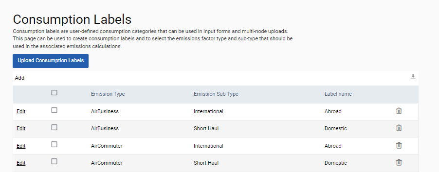

GSE-421: An Administrator can now import consumption labels in bulk, and add, edit, and delete consumption labels.
This is achieved using the new Consumption Labels page. The page is accessible through Admin Settings > Environment > Customisation > Consumption Labels.
The Administrator must have an Admin Environment user role.
Consumption labels are user-defined consumption categories that can be used on input forms and for multi-node uploads.
The new page can be used to import the labels and to select the emissions factor type and sub-type that should be used in the associated emissions calculations. To upload in bulk, the Administrator clicks the ‘Upload Client Labels’ button, then selects the pre-created Microsoft Excel file for import. The file must have columns Emission Type, Emission Sub-Type, and Label Name. For each label, values for all three are required.
Note: The Download button will download the entire table to Microsoft Excel. The downloaded file can then be used as a template for bulk import. Also, the Add button enables the Administrator to add individual labels one at a time. Neither action will overwrite any existing labels.
From this new page, an Administrator can also edit and delete labels. If a label is in use, only its sub-type can be edited. If a label is not in use, any of its field values can be edited. Only labels that are not in use and have not been used can be deleted.

Note: All of this functionality was first made available in release 2024.1.1.